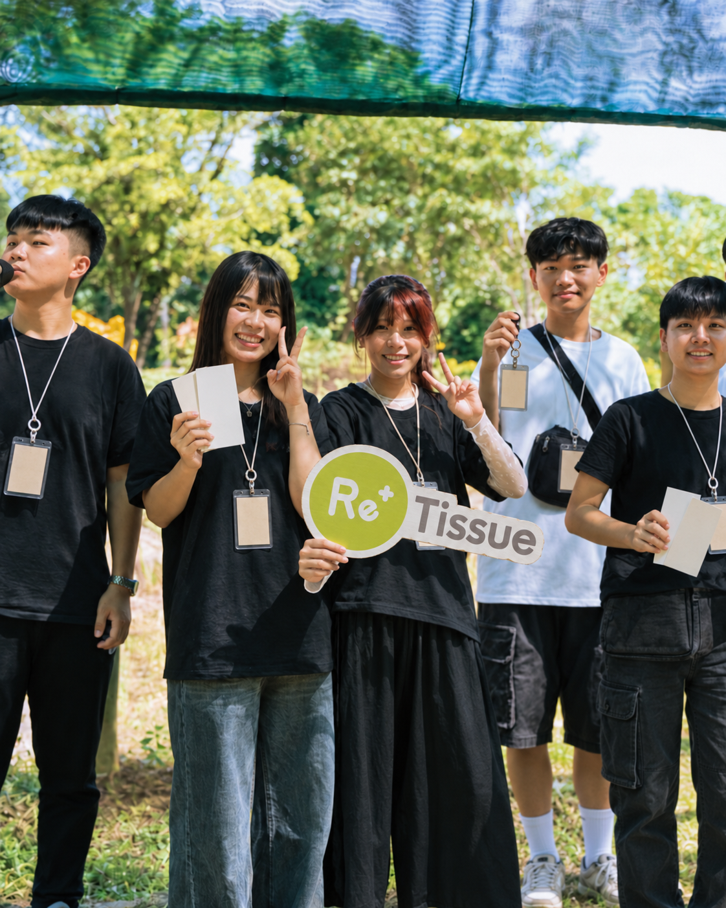

核心合作邀請植樹款 100% 再生環保衛生紙4 箱 共 288 包｜福袋與營隊公用
希望邀請 ReTissue 提供 植樹款 100% 再生環保衛生紙 4 箱，共 288 包，作為學員福袋與活動期間公用物資；實際交付、分裝與露出方式皆以雙方確認為準。
合作安排學員福袋與營隊公用物資
若 ReTissue 願意提供品牌識別素材，我們可配合規劃於福袋、活動物資說明與核可後的社群內容露出。
商品、數量、素材與露出範圍均以 ReTissue 最終確認為準。PRIVATE PROPOSAL
國立中山大學・五系聯合迎新宿營
邀請 ReTissue 陪五系新生，從福袋與營隊公用物資開始，認識再生衛生紙在日常使用中的意義。


WHY RETISSUE
ReTissue 將再生衛生紙與關注議題帶回日常；我們希望在不增加學員負擔的前提下，讓新生在福袋與營隊公用區自然接觸這份選擇。
前往 ReTissue 官方網站 ↗希望邀請 ReTissue 提供 植樹款 100% 再生環保衛生紙 4 箱，共 288 包，作為學員福袋與活動期間公用物資；實際交付、分裝與露出方式皆以雙方確認為準。
若 ReTissue 願意提供品牌識別素材，我們可配合規劃於福袋、活動物資說明與核可後的社群內容露出。
商品、數量、素材與露出範圍均以 ReTissue 最終確認為準。PARTNERSHIP PROPOSAL
優先合作方案
| 合作項目 | 主辦方交付 | 可共同討論 | 回報憑據 |
|---|---|---|---|
| 福袋與公用物資 | 依確認數量安排福袋與公用區使用，並於活動前完成物資盤點。 | 分裝方式、使用位置與品牌素材。 | 物資配置與現場照片。 |
| 活動官網 | 合作頁放置 ReTissue logo、官方連結與核可後的簡短介紹。 | Logo、連結與上線前審核。 | 線上截圖。 |
| Instagram 合作內容 | 活動前、現場、活動後各 1 則內容；文案與視覺皆先送 ReTissue 確認。 | 素材、標記帳號與文案規範。 | 貼文連結與公開紀錄。 |
| 成果結案 | 活動後 14 日內整理合作執行摘要與公開紀錄。 | 指定收件窗口與成果欄位。 | 結案 PDF、照片與公開連結。 |
CONTENT EXAMPLE
以下以三則貼文呈現合作方向：活動前準備福袋、活動中使用公用物資、活動後收束回憶。視覺與發布時程皆於上線前送交 ReTissue 確認。

出發前，把植樹環保款放進每位學員的福袋。
貼文方向一｜活動前EXECUTION & SAFETY
破冰、夜教、宵夜
校園內集合與活動，隊輔帶領、點名與安全說明。走馬瀨大地遊戲、水大地、晚會
公用物資依現場需求補充並維持環境整潔。結業、團隊活動、安平探索
戶外活動與移動前皆完成安全說明，結束後返抵中山大學。福袋與公用物資於活動前完成數量盤點，使用區域由工作團隊定時補充。
雨勢、高溫或重大事件依校方、場地方與政府指示調整。
所有對外品牌文字、圖片與實際露出皆經確認後發布。
NEXT STEP
若 ReTissue 願意評估本案，我們將依品牌回覆確認商品、素材與交付項目，並提供最終執行版本。